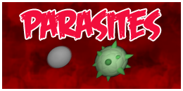

Procedural City [Demo]
{kind=link}
Procedural City is a demo that uses a few tricks to build random nice-looking 3D cities.
First, neighborhood blocks are randomly placed in an irregular rectangle grid.
{kind=link}
Then, building allotments are packed inside blocks using this bin packing algorithm.
Bin packing uses an heuristic that tries to maximize edge contact for "bins". This leads to better fitting of allotments along block edges.
Once blocks are filled, non-edge allotments are discarded.

Matrices are picked from one of six achitectural styles (art deco, art noveau, brownstone, chicago old school, international and modernist).
One pattern matrix implements simple block extrusion/exclusion to be performed in the façade geometry.
Another determines which element (ie.: window, door, column) should be appended where in the façade.
Details (ie: headers, rails, firestairs) are randomly selected according to the defined achitectural style.
Finally, some common props (ie: chimney, water tank) are scattered around the rooftops.
{kind=link}
Built with Unity personal edition.
Visit the project website,
or download a windows build of the demo here.
Bullets Are Fatal
{kind=link}
Bullets Are Fatal is a fast-paced 2.5D platform/shooter set in a fictional old west.
Shoot bandits, dodge bullets and run through procedurally generated levels to get your character to the saloon.
Bullets Are Fatal was developed in 72 hours for the Ludum Dare competition and got the 12th place in the graphics category (4.57/5).
It was built with C# and Unity personal edition.
Visit the LD #28 submission page
or download a windows build of the game here (compo version)
OfficeTopia
{kind=link}
OfficeTopia is a tycoon game in which you play as an entrepreneur that has to keep his business running for at least 2 years.
Choose the name and the specialization area of your company. Hire the best employees and bid for the most profitable contracts. In OfficeTopia you can fulfill your dream to run a small company with zero risk!
This game was awarded the 4th place in the 1st Sebrae Game Development Contest, a serious game nationwide contest (newspaper article).
It was built with C# and Unity personal edition.
Subscribe to Sebrae learning platform and play the web version (Portuguese only).
Wire3D
Wire3d is a multiplatform game engine created by antibyte. Written in C++, fully open source and licensed as LGPL.
In early 2012, I started contributing to the project, developing the code for reading controllers, improving bullet physics integration, etc. At the sime time we started a 3rd person shooter demo.
{kind=link}
At the end of the year, we decided to do some unit testing and so we started using googletest and google mock, testing and mocking platform specific code and running them on their own platforms (real or emulated).
Visit project website
Cubescape
{kind=link}
Cubescape is an action-platformer with some puzzle ingredients. It stopped being developed in 2013. This unfinished version features 3 levels and 1 boss stage. It was built with C# and Unity personal edition.
While playing Cubescape, you impersonate Lucia, a bright-skinned robot girl that has an elastic band as hair. The game starts as Lucia wakes up imprisioned in a weird place made out of cubes. She then learns she can move some of those cubes with her telekinetic powers and break free from her prision.
Cubescape requires a combination of thinking and manual skills, asking the player to disable traps with Lucia's telekinectic powers while jumping and moving through the scenarios.
Visit project website
Parasites

Parasites is an action/maze game in which you play with a microorganism that has to eat the internal tissues of a person. Evade white cells and avoid eating antibiotics. Survive as long as possible and achieve the highest score!
{kind=link}
Parasites main feature is a cellular automata algorithm that generates random cave-like levels.
Visit the project website
Play the applet version
Download the binaries
View the Game Design Document
javaPlay
javaPlay is a didactic java game engine, started by prof. Bruno Feijó as a step-by-step example for this book.
Extended by me as a final project for the computer games and animation course taken during my master's.
Visit project website